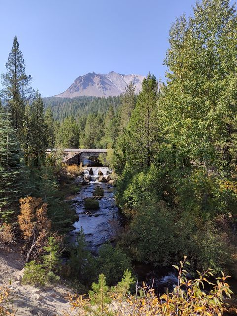
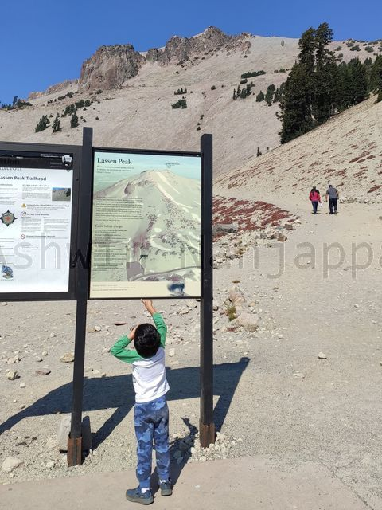
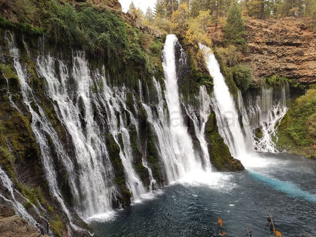

One of the hidden gems near the Bay Area is the Lassen Volcanic National Park. I was not even aware of this NP until someone I knew visited it. Once I checked out information about the park and realized it is just a 4.5 hour drive away, there was no hesitation in seeing it. Since we had a kid in tow, we decided to make this a relaxed 3-day vacation: one day to drive there, one day to see the NP and then drive back the third day.
Stay
We decided to stay in Shingletown, a sleepy town which was a short 20-min drive outside the NP. We stayed in a studio at the Living Springs RV and Cabins Resort, which we booked through AirBnB just a week before our trip. The studio had a simple cooking area, a queen bed, two bunk beds and an attached shower and toilet. Outside the studio we had a fireplace and a charcoal BBQ (which we enjoyed, so do not forget to get charcoal). The resort had RVs and cabins (without bathrooms). There is a small Mill Creek that flows behind the camping area and also a small pond which was good a calm evening walk.
National Park
The park has two entrances: northwest and southwest. Since we were closest to the northwest entrance we drove to that. There was a $30 entrance fee we paid at the entrance.
There is a single 30-mile road inside the park that goes past all the trails, viewpoints and things worth seeing.
Manzanita Lake is on the right when you enter and this lake was truly beautiful, with the Lassen Peak reflected in it.
Loomis Museum is a tiny museum and store at the north entrance. Sadly, the exhibition area was closed due to COVID.
There is a small Lily Pond Trail across the Loomis Museum that took us around the Reflection Lake, which had lots of bird life on the banks and in the water.
View from Hat Creek Trailhead
We did not hike on the Hat Creek Trailhead, but you might still want to get out here to see the gorgeous vista of the Hat Creek, the trees and the mountain in the distance.
The next point on the drive we liked was Summit Lake. Both of its entrances were closed, but we were able to park to the side of the road and enjoy walking around it a bit. It had a picnic area, but it was closed off and there were actually deer happily wandering around it.
We stopped at the Kings Creek Picnic Area for lunch. There were well-spaced out picnic tables here under the trees. It was truly peaceful to eat amongst nature here.
View from Lassen Peak Trailhead
The most majestic stop was at Lassen Peak Trailhead. This is the most popular stop on the road as attested by the huge parking area. The Lassen Peak towers over this trailhead, a strenuous but just 4-hour hike from here. We just hiked a teeny bit to get a better view of the peak and returned.
Right after this were two picture-perfect lakes Lake Helen and Emerald Lake. Surrounded by 3 mountains around, with crystal clear water lapping on the shore, we loved these stops.
Sulphur Works is the smelly stop where you can see sulphur and hot mud bubbling out from the earth due to volcanic activity. It is a bit underwhelming compared to what you might imagine.
The final stop on the road was reaching the south-west entrance at the Kohm Yah-mah-nee Visitor Center. Disappointingly, their big exhibition area was closed due to COVID, but the big store and outdoor dining area were open for business.
Though we traveled during the CA haze, we were surprisingly spared most of it and we saw memorable vistas on the drive.
Toilets: All the visitor centers, picnic areas and most of the trailheads have toilets. So you or the kids do not need to worry about that.
Burney Falls
Burney Falls
The morning of the day we checked out, we first made a 1-hour drive up North to see Burney Falls. These majestic and pretty falls are inside the McArthur-Burney Falls Memorial State Park. There is a $10 entry fee to be paid at the entrance. A short zig-zag trail right near the parking area takes you right in front of this spectacular waterfall. Sadly for us, it was incredibly chilly on our morning near the falls.